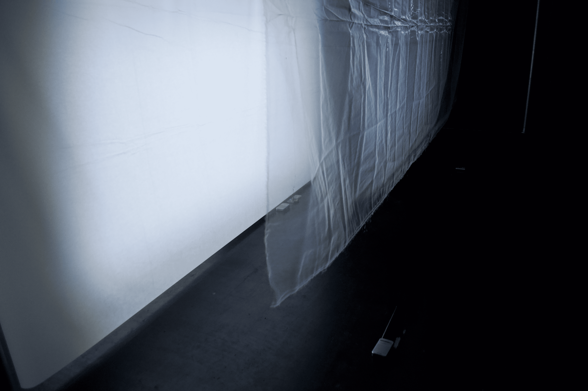
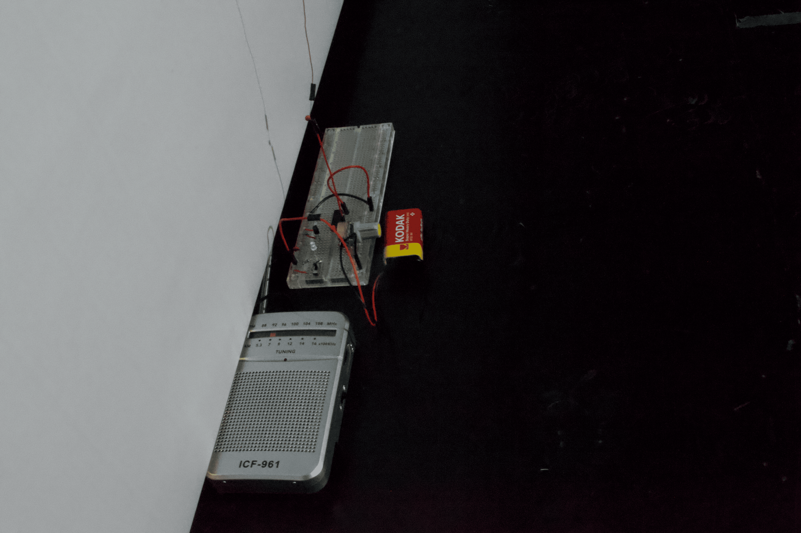
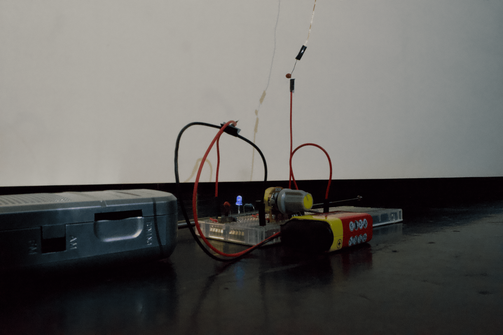

WEISS / WEISSLICH 7a: Rauschempfänger is a collaborative installation. While the visual environment is constructed through textiles, light, and projections, the sonic layer is generated through radio receivers and self-built transmitters. A labyrinth-like structure of fabric and light invites visitors to move through the space, where visual and sonic layers unfold simultaneously. The visual installation shapes movement and orientation, while the sound reveals hidden electromagnetic activity and spatial residues. The work reinterprets Peter Ablinger’s approach on color and noise in WEISS / WEISSLICH (1980-99). AM radio receivers and custom-built transmitters that generate unstable signals. These signals expose infrastructural noise and create a dynamic feedback loop between transmission and reception. The resulting sound is site-sensitive, transforming noise into a perceptual medium through which the invisible conditions of the space become audible.






Photos: Carmen Pomet ©